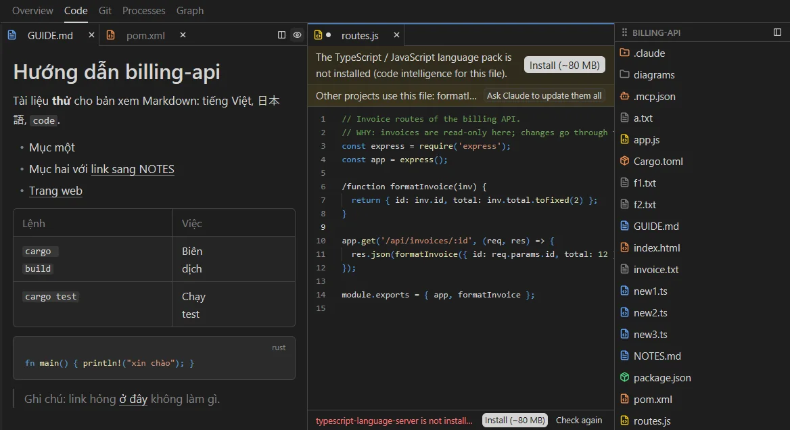
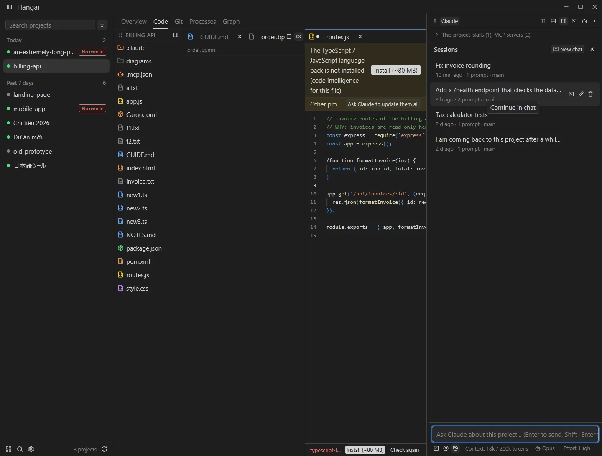

Getting started
From download to your first Claude edit in about ten minutes. Each step works on its own, so stop wherever Hangar already does what you need.
1Install
Download the installer for your system from the [download section](index.html#download). The installers are not signed yet, so your system warns you the first time.
On macOS and Linux, the quickest way is one command in Terminal. On macOS it also skips the Gatekeeper warning, so there is no *Open Anyway* step.
curl -fsSL https://caoquyen1913.github.io/hangar-app/install.sh | sh- **Windows:** run the `.exe`. If SmartScreen stops it, choose *More info*, then *Run anyway*.
- **macOS:** open the `.dmg` and drag Hangar to Applications. If macOS blocks it, open *System Settings › Privacy & Security* and choose *Open Anyway*.
- **Linux:** make the AppImage executable with `chmod +x`, then run it, or install the `.deb`.
If macOS says the app is damaged, run this once in Terminal, then open Hangar again.
xattr -dr com.apple.quarantine /Applications/Hangar.app2Add your folders
On first start the sidebar is empty. Click **Add folder** and pick a folder that contains your projects, such as `~/work`. Add as many as you like; you can change them later in *Settings › General*, or drop a folder onto the sidebar.
Hangar looks up to four levels down. A folder counts as a project when it has `.git`, `package.json`, `Cargo.toml`, `pyproject.toml`, `go.mod` or a similar file. It skips `node_modules`, `target`, `dist`, `vendor` and hidden folders, and it never changes anything while scanning.
3Read the board
Every project gets a status. You set flying, parked or archived; Hangar works out the rest from the last commit, the newest file change and the last Claude Code session.
| Status | What it means |
|---|---|
| Flying | You are working on it. New projects start here. |
| Cold | Flying, but untouched for 14 days. Change the threshold in Settings, or for one project on its Overview. |
| Parked | On hold on purpose. Parked projects never turn cold. |
| Archived | Done or dropped, with a reason. Left out of reminders and search. |
| Unpushed | Commits that have not been pushed for more than 3 days. |
| No remote | The repository has commits but nowhere to push them. One lost disk away from gone. |
On Windows and macOS, closing the window keeps Hangar in the tray. It rescans every 10 minutes and sends at most one reminder a day.
4Open a project
Click a project in the sidebar. Its page has five tabs: **Overview**, **Code**, **Git**, **Processes** and **Graph**. Below them is a panel with the Claude chat and as many terminals as you want; drag it to the left, right or bottom.
- Each project remembers its open tabs, unsaved edits, page and terminals, also after you quit.
- The Overview has a button for each `package.json` script, Cargo command, Makefile target and `justfile` recipe. Clicking one runs it and shows its output under Processes.
- Opening a file in a language without a language server shows a strip offering its language pack. Packs live next to Hangar's database and never touch your global tools.

5Connect Claude Code
Hangar uses your own Claude Code. It talks to Anthropic exactly as it does in a terminal; Hangar adds nothing in between.
- Install [Claude Code](https://docs.claude.com/en/docs/claude-code/setup) and sign in once with `claude` in a terminal.
- Install Node.js, then the adapter the chat panel uses:
npm install -g @agentclientprotocol/claude-agent-acpOpen a project and type in the Claude tab. Each edit Claude wants to make appears as a diff; choose **Allow once**, **Always allow** or **Reject**. Without the adapter the tab offers *claude in terminal* instead, which works the same as running `claude` yourself.
The history button under the input lists the project's saved sessions. Pick one to continue it in the chat, or open it in a terminal.

6Link projects
If a front end, its API and a shared library live in separate folders, link them on the Overview. Hangar suggests links it can see in the code. Linked projects go cold together, Claude can read and edit across them from one chat, the Graph follows calls between them, and their launchers start from one place.
To start a whole stack at once, add a launcher on the Processes tab: a named group of commands, each with its own folder and environment variables.
7Shortcuts
On macOS use Cmd where this table says Ctrl. Inside a terminal, plain Ctrl+letter keys go to the terminal.
| Keys | Does |
|---|---|
| Ctrl K | Jump to a project or file, or run a command |
| Ctrl L | Ask Claude |
| Ctrl J | Show or hide the panel |
| Ctrl B | Fold or unfold the sidebar |
| Ctrl Shift ` | New shell |
| Alt 1–5 | Project tabs |
| Ctrl S | Save |
| Shift Alt F | Format the file |
| F12 | Go to definition |
| Ctrl , | Settings |
| Ctrl / | Every shortcut |
8Questions
Does Hangar upload my code?
No. Scanning, the editor, Git and the code graph all run on your machine. The app asks the npm registry once a day for the latest Claude Code version number, and language packs download only when you install them. Anything sent to Anthropic goes through your own Claude Code, when you use it.
Where does Hangar keep its data?
In one database file in your system's config folder: `%APPDATA%\Hangar` on Windows, `~/Library/Application Support/Hangar` on macOS and `~/.config/Hangar` on Linux. Language packs, logs and agent worktrees sit next to it.
Do I need Claude Code?
No. The dashboard, editor, Git, processes, graph and maintenance work without it. Claude Code adds the chat, agents, *What was I doing?* and the weekly report.
Will it touch my Git history?
Only when you click. Hangar runs your own `git`, never force-pushes, and asks twice before discarding changes. Agents work in a separate worktree on their own branch until you merge them.
How much does it cost?
Hangar is free. Claude Code is billed by Anthropic under your own plan.
Is there a command-line version?
Yes: `hangar scan` prints the same table in a terminal, and `hangar scan --json` gives it to scripts. It is on the releases page next to the app.